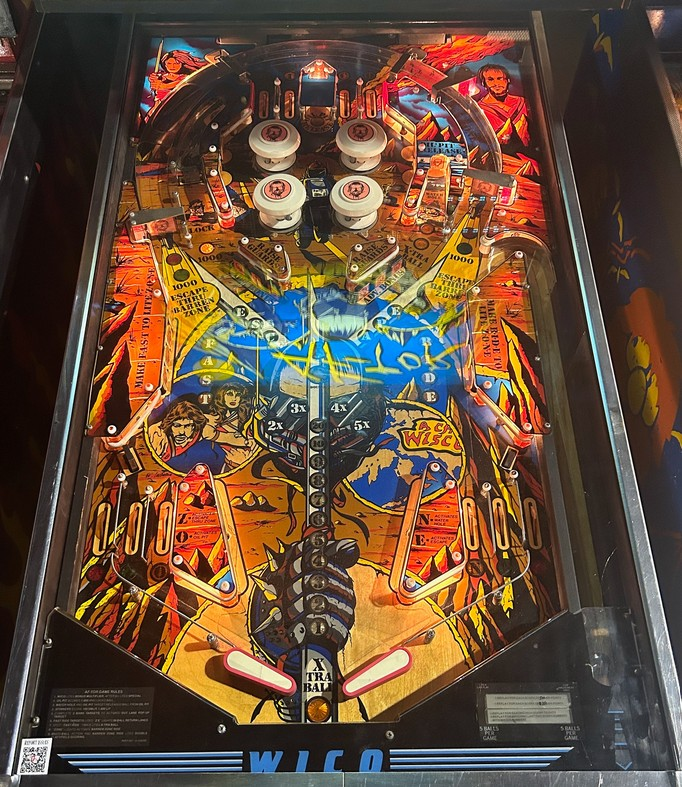

Priority 1: make sure the Shield drop targets blocking the out lanes are raised. If they are down, raise the left one by completing the ESC targets just left of center, or raise the right one with the APE targets right of center.
Priority 2: start multiball by making 2 shots to the Oil Pit just right of the left orbit (one for the drop target, then one to lock), followed by hitting either Oil Pit Release target (above the bumpers or just left of the right orbit).
If those are both taken care of, shoot orbits to complete WICO top lanes for bonus X and to get the ball to rattle around the very lively pops.
The below picture of Af-Tor's playfield was taken from Pinside, where it is image #3890369.

The shooter lane on Af-Tor goes straight up, then makes a sharp turn to the down-left. A full plunge sends the ball directly toward the entrance of the left out lane. By default, any time a ball is fed to the shooter lane, the left Shield drop target that blocks the out lane will be raised, preventing an immediate drain, but this can be disabled. Whether the Shield is up or not, always try to short plunge to the flippers: if the target is up, a short plunge saves it for later use, and if it's not, you'll need to short plunge to be able to play pinball.
There is no one-way gate at the exit to the shooter lane, and a ball can re-enter at any time. The location of the Ride targets on the right makes it difficult, if not impossible, to shoot the ball back into the plunger lane from the flippers, but this happens more often than you'd expect as a ricochet off of the APE drop targets, located just to the right of center playfield. There is no autoplunger on Af-Tor, so if this happens, you need to plunge the ball again. If you're playing Af-Tor in a competitive setting, ask a tournament director whether a ball that re-enters the shooter lane during multiball can be allowed to stay there, or if it must be plunged immediately instead.
Certain amounts of short plunge can cause the ball to immediately drain between the flippers. If this happens at the beginning of any ball, you'll get the ball back, because the playfield has not been validated. However, if you're plunging a second ball because you just locked one or because a ball ended up back in the shooter lane, playfield validation is not in play, and an immediate center drain will end your turn.
Multiball is never more than 3 shots away on Af-Tor. First, shoot the Oil Pit lane located just to the right of the left orbit to lower the drop target within. Second, shoot the Oil Pit lane again to lock a ball in the saucer at the back. Third, shoot either of the Oil Pit Release targets. One Oil Pit Release target is located just above the pop bumpers, and the other is the Water Hole target located just to the left of the right orbit.
There is no ball save during multiball of any kind. All playfield scoring is 2x during multiball (by default; this can be disabled entirely). There are no other multiball-specific scoring features. All scoring rules listed in the remainder of the guide assume no playfield multiplier is in effect.
By default, lock stealing is available. A ball locked at the Oil Pit will be preserved across players, balls, and games until it is released. On hard settings, a locked ball will be kicked out and forced to drain if the ball ends before the lock is released.
The left and right out lanes each have a Shield drop target which blocks the out lane when raised. If the ball runs into a Shield drop target, it lowers and 1,000 points are scored.
Targets in the ESC bank of drops just left of the center of the table each score 3,000 points and a bonus advance. Knocking down any target in this bank starts a 15 second timer. If the rest of the ESC bank is not completed within the time, it will reset. If the bank is completed, 10,000 points are scored, the left out lane Shield is re-raised, and then the ESC bank resets anyway. The APE targets, located just right of table center, work identically, and raise the Shield in front of the right out lane when completed.
Completing there banks of targets whenever the Shields are down is paramount to being able to play a long ball on Af-Tor. Both banks can reliably be shot from either flipper, but are quite a bit easier to backhand (left flipper to ESC targets, right flipper to APE).
Top lanes score 1,000 points when not lit, or 2,000 points when lit. Make an unlit lane to light it. Flipper lane change is available on the right flipper only, allowing the position of the top lanes' lights to be moved. Lighting all 4 top lanes spells Wico, unlights all lanes, and advances the bonus multiplier. See the Bonus and bonus multiplier section below.
Bumpers score 100 points each, or 1,000 points when lit. There are 4 standup targets within the pop bumper nest: each target scores 1,000 points per hit, and lights the nearest pop bumper for 15 seconds. The pop bumpers on Af-Tor tend to be very lively, making it a very good idea to shoot up the orbits or directly into the pops during multiball for fast scoring.
The 4 left standup targets spell Fast, and the 4 right standup targets spell Ride. Hitting an unlit target scores 1,000 points and a bonus advance, and lights that target. Hitting a lit target scores 2,000 points and a bonus advance. Spelling Fast or Ride resets that bank's lights and scores 20,000 points.
Spelling Fast once lights the two left in lanes, labelled Z and O. Spelling Ride once lights the two right in lanes, labelled N and E. In lanes score 1,000 points when not lit or 2,000 points when lit.
The spinners on the orbits score 100 points per spin when not lit. Making a lit Z or O in lane lights the right spinner green for 20 seconds, and lights the left spinner red for 20 seconds. Making a lit N or E in lane lights the left spinner green for 20 seconds, and lights the right spinner red for 20 seconds. Spinners score 1,000 points per spin when lit green, or just 10 points per spin when lit red.
Normally, when shooting a spinner, the ball will be stopped at the top of the playfield and be funneled into one of the four top lanes, which spell Wico. However, a full shot to a lit green spinner will not be stopped, and will instead make a full orbit around the playfield, coming down the opposite side. This is called Escaping Thru the Barren Zone, and awards 2x playfield scoring until the initial timer on the spinners runs out. This can be stacked with the 2x playfield always given during multiball for a brief 4x playfield multiplier.
Escaping Thru the Barren Zone is usually not preferred, because even though the 1,000 point spinner and brief 2x playfield are nice, it's usually better long-term to stop in the top lanes, earn a Wico letter, and rattle around the pop bumpers for a while.
Completing both Fast and Ride twice each on a ball lights an extra ball at the Water Hole target near the right orbit.
Base bonus is advanced by hitting any ESCAPE drop target or Fast or Ride standup target. The maximum base bonus is 39,000 points. The bonus ladder is involved in a lot of the game's light show animations, and also "counts up" to the new bonus value each time the base bonus is advanced, so it can be rather difficult to determine your actual base bonus count.
Bonus multiplier is advanced with each completion of the Wico top lanes. Reaching 5x bonus lights the out lanes for Special; they can either both be lit, or alternate automatically every few seconds. The bonus multiplier can be advanced past 5x; immediately after 5x is 7x (shown by lighting both the 5 and 2). The maximum I have seen is 8x (5+3), but more is likely possible, potentially up to 14x (5+4+3+2).
However, the bonus multiplier lit on the playfield is somewhat misleading. If no bonus multipliers are earned, the end of ball bonus is only awarded once, but if one or more bonus multiplier inserts are lit, the bonus will be given the number of times shown on all lit inserts added together, plus one. This means you really score 3x your bonus when only 2x is lit, 5x your bonus when only 4x is lit, 8x your bonus when both 5 and 2 are lit, etc. I do not know if this is a bug or intended behavior.
There is no mid-ball bonus collect of any kind. Base bonus can never be carried from ball to ball; by default, bonus multiplier does get held on all balls, but this can be disabled entirely. Get multipliers early and often for the potential of bonuses worth 250,000 points or more, which is a significant sum.
Af-Tor has a conventional in/out lane setup, but with 2 in lanes on each side instead of one. The left in lanes reading Z and O are lit when Fast is completed once; the right in lanes reading N and E are lit when Ride is completed once. See "Fast Ride targets, spinners, and orbits" above.
Out lanes score 3,000 points, or Special when lit by advancing the displayed bonus multiplier to at least 5x. Out lanes can be temporarily blocked off by Shield drop targets positioned near their entrance; see "ESC and APE drop targets" above.
Lock stealing can be turned off. If this is the case, locked balls will be ejected if the playfield ball is drained before multiball is started.
The 2x scoring during multiball can be disabled.
The automatic reset on the left out lane Shield target can be turned off. On default settings, the left out lane drop target is automatically raised every time a ball is fed to the shooter lane (at the beginning of a turn, or after a lock), helping to prevent instant drains off the plunge.
Extra ball cannot be set to points, but it can be disabled outright. There can also be a limit of 1 extra ball per ball in play. Special can be set to award a free game, an extra ball, 100,000 points, or nothing at all.
The out lane Specials can be both lit at once or alternate between the two every few seconds.
Af-Tor is the first flipper pinball game from any manufacturer with alphanumeric score displays. Unfortunately, the alphanumeric capability is used very little during gameplay.